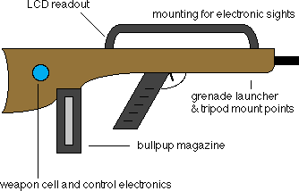

Before describing technomagical weaponry it is necessary to
detail the inner workings of firearms of Coalition manufacture. Even
after centuries of advancement large doses of kinetic energy delivered
via projectile weaponry remain one of the staples of the Coalition
arsenal. Of course, the inner mechanism of the weapons has evolved
somewhat from firearms of the late 20th century. Hereafter "current"
will refer to armamanets of the late 20th century for purposes
of comparison.
Coalition weapons are designed in the bullpup
configuration, where the ammunition magazine is placed behind the
handle in the weapon stock. This allows the weapon to be shorter and
lighter than current armaments. The Coalition uses advanced
composite and plastic materials which are considerably lighter than the
steel and wood used in current firearms. All weapons have mount points
to electronic sights and underslung grenade launchers. A small
LCD on the stock reads off the number of rounds left in the magazine
and status information for any peripherals.
The Coalition uses caseless ammunition for their weapons.
That is, the propellant is not encased in a brass cartridge as in
current firearms. The propellant is a solid organic compound which
holds its shape without need of a casing. This organic compound is
ignited electrically by a power cell in the weapon, as opposed to
modern gunpowder which is ignited when a hammer strikes a primer
button embedded in the back of the brass casing. Because the Coalition
compound is not flammable it will not explode as a result of heat or
fire (though stray lightning bolts could set it off!). There are many
advantages of caseless ammunition: the rounds are lighter and smaller,
and the weapon design is simplified as it does not have to eject the
spent shell casings.
A weapon cell in the stock provides the current required to
ignite the propellant. The cell is recharged via a thermocouple which
generates power from the exhaust gases when fired. The cell also
powers a small control computer which takes input from the trigger,
safety controls, ammunition magazine and any attached peripherals.
More advanced control computers can hook to the DNI (Direct Neural
Interface) jacks of a cybernetic operator to provide a gun's eye view
from a mounted electronic sight. The hardpoints which allow connection
of sights or underslung secondary weaponry also provide a link to the
main control computer.